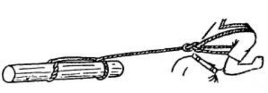
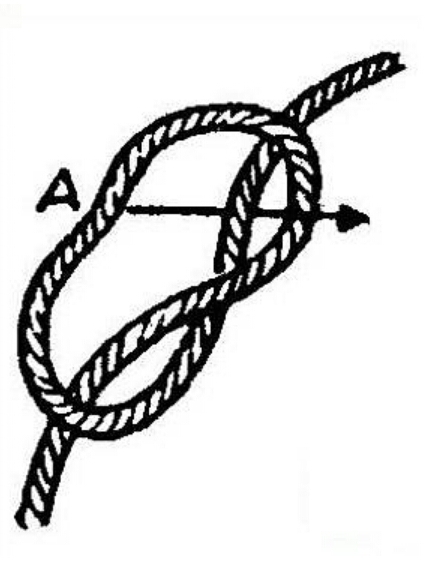
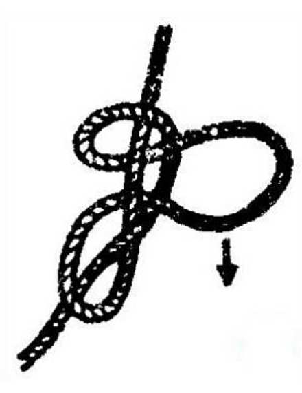

Simpul penarik. Gunanya untuk menarik benda yang cukup besar.

Cara membuat Simpul Penarik:
1. Pada bagian ujung tali A masukan ke dalam lubang menurut arah panah, sehingga akhirnya akan tampak seperti gambar ke-2

2.
